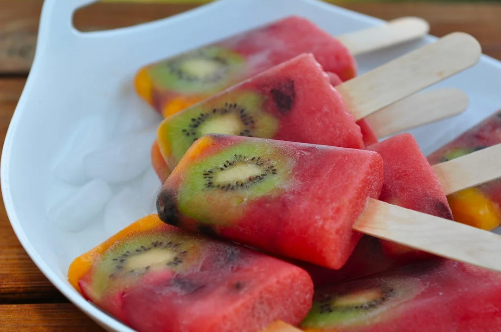

Watermelon Popsicle

Description
A simple recipe that could be adapted with any other fruit puree to make a refreshing summer snack
Ingredients
- 3 cups watermelon puree
- 1/2 cup fresh blueberries
- 1/2 cup chopped fresh strawberries
- 1 kiwi, peeled and sliced
- 1 peach or nectarine, diced small handful fresh cherries, pitted and chopped
Directions
- Cut the watermelon into chunks and then puree it in a blender until smooth. Set aside.
- Set out about 1 dozen popsicle molds (amount needed will vary depending on size of molds). Fill each one with the chopped fresh fruit. Then pour in the watermelon puree until each mold is full to the top. Place a popsicle stick into each one. Place into your freezer and freeze for about 6 to 8 hours.
- When ready to serve, run the popsicle molds under warm water for a few seconds and then pull each one out.